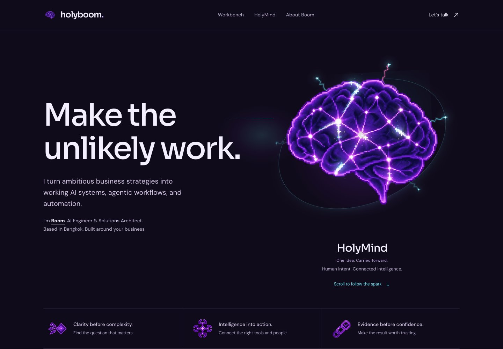

Motion stays active.
No scroll required.
Recorded from the published page with prefers-reduced-motion: reduce and the old stored setting holyboom-motion=off. No scrolling, mouse movement, click or tap during the recording.
Full brain electricity, visible ambient current, and automatic foreground recovery.
This is an emulated mobile WebKit recording, not a physical iPhone performance benchmark. The video has playback controls; the showcase itself has no Motion toggle.
Published-site checks
38 always-active checks passed in Chromium, 38 in WebKit, and 85 end-to-end energy / interaction checks in WebKit. No failed assertions or recorded runtime errors.
What was corrected
v8 automatically selected a calm profile when the OS reported reduced motion. That removed scroll choreography, stopped brain breathing, and left only three very slow traces. v9 uses the owner's explicit full-motion policy and adds continuous visible linework independent of scrolling.
The OS setting on the owner's actual device is unknown. This page records the reproducible software path and the fix, not a diagnosis of that device.
Before: reproduced v8 policyDesktop layout unchanged

Original artwork and all established controls were retained. Motion is parked only when a scene/page is not visible. No independent flash-safety audit or WCAG motion compliance certification is claimed.